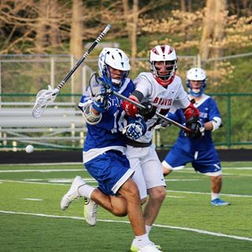

Jacob has played lacrosse since 4th grade. He plays for the Duke club lacrosse team today. In his career, he began as a defenseman. As he grew older, he bcame more and more speciliazed as an LSM. He was a starter for two years on his varsity team and had became better over time. His senior year he lead the team in turnovers forced and in penalties. His legacy has been left on the Indian Hill LAcrosse field with a number of stretches and a nickname of the "stickdoctor". He enjoys playing wall ball and hitting people with sticks, it is a hobby that is still going.
Home US Lacrosse Jake Wins All-Ameircan